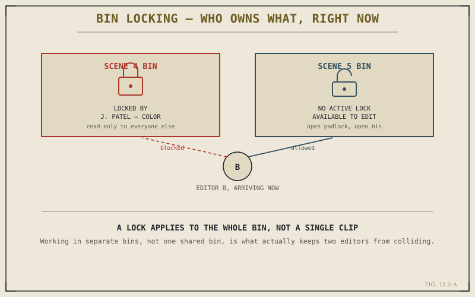

Chapter 12.2 left one question deliberately open: a shared database means every connected seat can see and reach the same project, but nothing about "reachable" on its own stops two people from reaching for the same bin at the same moment and making conflicting changes. This chapter answers that question directly. Locking is the mechanism that keeps a shared, concurrently-writable project from turning into a mess of overwritten work, and understanding exactly what it covers — and what it deliberately doesn't — is what lets a team actually rely on it.
Locking at the Bin and Timeline Level
When a user actively opens or edits a bin or a timeline inside a collaborative project, Resolve marks that item as checked out to them for the duration of the work — visible to every other connected seat as a lock icon alongside the owner's name. Other users can still see the locked item; browsing and reviewing its contents stays available. What locking actually prevents is writing: no other seat can modify that specific bin or timeline while the lock is held, which is precisely the guarantee that keeps two people from silently overwriting each other's changes to the same piece of the project.
What a Lock Actually Covers
It's worth being precise about the granularity here, because it's coarser than some people expect the first time they encounter it. A lock applies to an entire bin or an entire timeline, not to a single clip or a single edit point within it. That's a deliberate design choice, not a limitation Resolve simply hasn't refined yet: tracking and merging conflicting changes at the level of individual frames or individual edit points is a dramatically harder problem than tracking who currently owns a whole bin or timeline, and the coarser model is far more reliable in practice, even if it occasionally means waiting for a lock to release on a bin you only needed briefly.

The lock is whole-bin, not per-clip — a second editor is blocked from one bin and free to work in the other.
A lock isn't there to stop you from seeing what a colleague is doing — browsing a locked bin stays available to everyone. It's there to stop two people from writing to the same piece of the project at the same instant. Everything else stays visible; only the writing is exclusive.
Designing a Bin Structure Around Who Touches What
Because locks operate at the bin level, the practical skill worth building here isn't really about the locking mechanism itself — it's about bin structure. Chapter 2.2 covered bins as an organizational tool for footage; on a collaborative project, bin structure is also, quietly, a concurrency strategy. Splitting a project into bins that mirror how the team actually divides labor — by scene, by reel, by task — means locks rarely collide, because each person's work naturally lives in a different bin from everyone else's. A project with one enormous bin holding every scene guarantees frequent lock contention; a project organized around the team's actual division of work mostly avoids it without anyone having to think about locking at all.
Working Around a Lock You Don't Own
When you do need something from a bin someone else currently holds, the options are limited but manageable: you can still view and reference its contents in read-only form, you can wait for the lock to release, which happens automatically once the owner closes that bin or timeline, or you can simply ask them directly, since on most productions the fastest resolution to a lock conflict is a quick message rather than a technical workaround. Locks can also occasionally need a manual release — if someone closes Resolve improperly or their connection drops without releasing cleanly, a project administrator can typically clear a stuck lock from the server side, which is worth knowing exists before it becomes an urgent, confusing problem mid-deadline.
Locking solves the specific problem of two people writing to the same bin at once — it doesn't solve every conflict a shared, multi-person project can produce. Chapter 12.4 turns next to a related but distinct set of challenges: what changes when the people sharing this database aren't in the same building, or even the same time zone, and remote grading and review become part of the workflow.
Key Concepts to Remember
- A lock checks out an entire bin or timeline to one user — visible to everyone, writable by only its current owner.
- Locking is whole-bin, not per-clip — a deliberate, coarser model chosen for reliability over the far harder problem of merging frame-level conflicts.
- Bin structure doubles as a concurrency strategy — organizing bins around how the team actually divides labor minimizes lock collisions.
- Locks release automatically on close and can be manually cleared by an administrator if a seat disconnects without releasing cleanly.
Cross-References Forward
| → Ch. 12.4 | Remote Grading and Review Workflows — extends the locking and sharing model this chapter covers across distance and time zones. |
| → Ch. 12.2 | Revisit Collaboration Mode and the shared database that makes this chapter's locking mechanism meaningful. |
| → Ch. 2.2 | Revisit the Media Pool's bin structure now that bin organization is also, in practice, a concurrency strategy. |